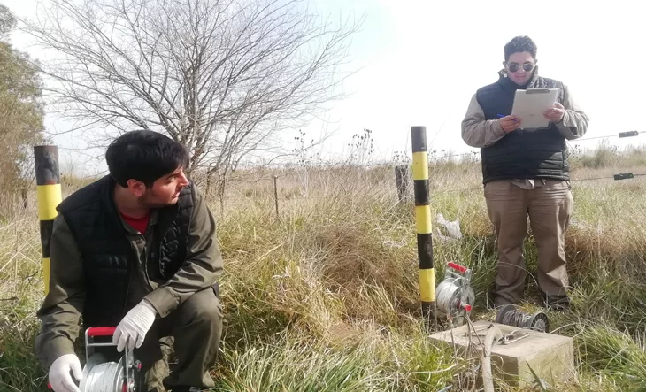

Alertan que los efectos de la actividad humana sobre los ecosistemas marinos pueden ser
irreversibles
28 agosto, 2022
Incendios forestales, construcción en zonas costeras y los efectos del
extraccionismo, son algunos de los quince problemas que plantea
Conocer los problemas que afectan a los ecosistemas marinos en todo el mundo es una de las acciones
necesarias para aportar herramientas y soluciones tempranas en pos de lograr una adaptación al
cambio climático. Además, el desarrollo de biodiversidad en los océanos y los mares es un aspecto
fundamental de los tres pilares del desarrollo sostenible -económico, social y ambiental-, que
mantiene el funcionamiento saludable del planeta, según la ONU.
En este marco, una investigación internacional, integrada de la cual participaron dos científicos
del CONICET, analizó e identificó las principales problemáticas que afectarán a los ecosistemas
marinos en la próxima década. El estudio, publicado en la revista Nature Ecology & Evolution, busca
poner en evidencia cuestiones ambientales relacionadas con el océano que no cuentan con inversión e
incentivos para su investigación, en tanto son temáticas que cobrarán un rol clave en la próxima
década debido a su impacto sobre el planeta y aun más, sobre la diversidad del océano.
Analizan el estado de las aguas subterráneas en la Cuenca Matanza-Riachuelo
11 septiembre, 2022

La campaña de muestreo permitirá tener datos actualizados
El Instituto Nacional del Agua (INA), en conjunto con la Autoridad de la Cuenca Matanza-Riachuelo
(ACuMaR), desarrolla la Campaña de Aguas Subterráneas de la Cuenca, que tiene como objetivo la
evaluación de la calidad del agua subterránea en 110 pozos a distintas profundidades en acuíferos de
la cuenca a nivel freático-Pampeano y en el Puelche y la medición de la profundidad del nivel del
agua en todas las perforaciones.
"Nos complace mucho el inicio de este nuevo Convenio de Monitoreo de Calidad de Agua Subterránea de
la Red de Pozos de la Cuenca Matanza-Riachuelo, porque nos permite colaborar una vez más con la
ACuMaR y nos brinda la oportunidad de seguir trabajando en una cuenca que conocemos y estudiamos
desde hace más de 20 años”, señaló Alejandra Rodríguez Speroni, responsable del Programa de Estudios
de Calidad de Agua en Cuencas Hídricas (PECACH) del Centro de Tecnología y Uso del Agua (CTUA) del
INA. Asimismo, agregó: “Con los monitoreos se genera información de calidad de agua consistente, que
constituye la base y soporte para la toma de decisiones y acciones necesarias para la adecuada
gestión del recurso”